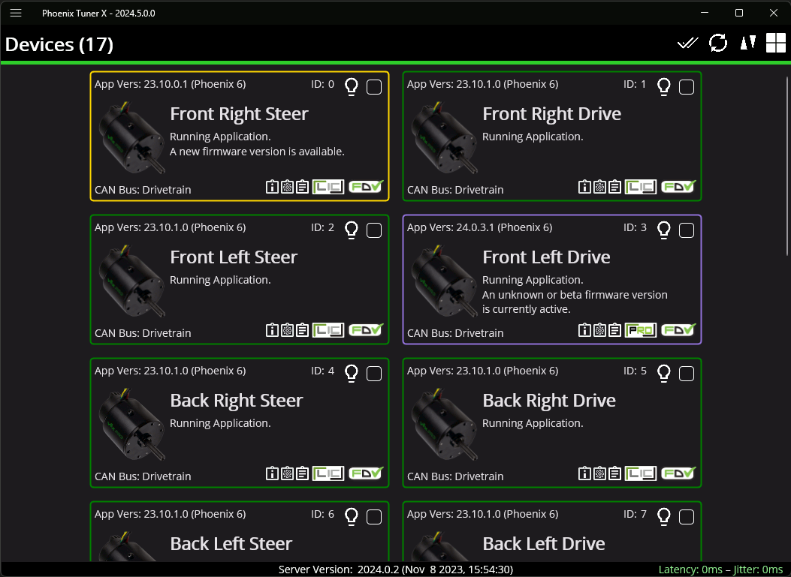
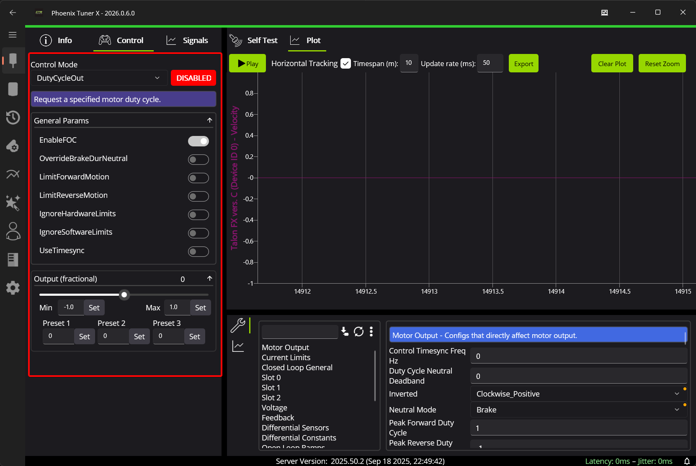

21.3 Using Phoenix Tuner X#
Why it matters#
Every CTRE device on next year's robot (the Krakens, CANcoders, Pigeon 2, and CANivore) is set up and checked with Phoenix Tuner X. It's where you give each device its CAN ID and name, update its firmware, spin a motor by hand, graph a sensor, read faults, and run the swerve generator from Lesson 21.2.
Tuner X is to CTRE devices what REV Hardware Client is to SPARK MAXes (Lesson 4.2).
Read this#
Sources and licenses
This lesson is written for the course from CTR Electronics' Phoenix 6 documentation. Each section links the CTRE page it's based on; go there for the full details. CTRE's documentation is © CTR Electronics under CC BY-NC-ND 4.0 (non-commercial, no derivatives), so this course doesn't copy or adapt its text. The two screenshots are included unmodified, with attribution, as that license allows (license file).
Walkthrough#
Install it#
Tuner X runs on Windows 11 (Microsoft Store), Android 9+ (Google Play), and macOS 14+ / iOS 15+ (App Store). A phone or tablet version is handy in the pits.
Hover over almost anything in Tuner X for a tooltip that explains it.
Source: CTRE: Phoenix Tuner X
Step 1: Connect to the robot#
Tuner X talks to a small program on the roboRIO called the Phoenix Diagnostic Server. Your robot code starts it automatically, as long as the code uses Phoenix 6.
-
Open the menu (☰, top left). In the address box, pick a preset or type an address:
Choice Use when Driver Station The Driver Station is open and connected: Tuner X asks it for the robot's address roboRIO USB You're plugged into the roboRIO with a USB cable ( 172.22.11.2)10.46.74.2Team 4674's roboRIO over the radio or Ethernet localhost Simulation, or a CANivore plugged into your laptop -
Freshly imaged roboRIO, or code that doesn't use Phoenix 6 yet? Click Run Temporary Diagnostic Server. It runs until the roboRIO reboots, so you can set up devices before there's any robot code.
- Check the Server Version at the bottom of the window. Its year must match Tuner X's year (2026 Tuner X needs a 2026 server).
Source: CTRE: Connecting Tuner
Step 2: The Devices page#
The first page lists every CTRE device on every CAN bus as a card.

The Devices page. Screenshot from CTRE's Phoenix 6 documentation, © CTR Electronics, CC BY-NC-ND 4.0, unmodified.
The card's outline color tells you its state:
| Color | Means | Do |
|---|---|---|
| Green | Latest firmware | Nothing |
| Yellow | Newer firmware is available | Update it (Step 4) |
| Purple | Unexpected or beta firmware | Update to the release firmware |
| Red | Duplicate ID: two devices of the same type share an ID | Fix it now (Step 3). Neither will work right. |
| Blue | Tuner couldn't get the firmware list | Connect your laptop to the internet once |
Each card also shows a CAN FD badge if the device can use CAN FD (not that it's on an FD bus right now), and a license badge (Step 9).
Source: CTRE: Device List
Step 3: Name, ID, and blink#
Click a card to open its device details.
- Blink (the light bulb) flashes the device's LEDs, so you can find which physical motor a card is. Use it whenever you're not sure.
- Name and ID: type them and press Set. IDs go from 0 to 62. Use the plan from Lesson 21.2, and name devices by where they are, like
FL DriveandFL Steer.
Setting up new devices
New devices all arrive with the same ID, so they show up as red duplicates. Plug them in one at a time, set each one's ID and name, then add the next.
Source: CTRE: Device Details
Step 4: Update firmware#
Firmware has to match the season's Phoenix 6 (26.x firmware for 2026). Tuner X downloads the latest firmware automatically when it starts.
- One device: in its details page, pick the version and update.
- All at once (batch): on the Devices page, tick the checkbox on one card, then the checkmark icon (top right) to select every device of that model. Open the field-upgrade dialog, choose the year, and click Update to latest.
Phoenix 6 firmware
Choose Phoenix 6 firmware, because the robot code uses the Phoenix 6 library. If you cancel a batch update, the device currently updating still finishes.
Sources: CTRE: Device List, Batch Field Upgrade; CTRE: Device Details
Step 5: Set up the CANivore#
Open CANivores in the left sidebar.
- Rename it (for example
drivetrain). Robot code finds the bus by this name; it must matchkCANBusinTunerConstantsexactly. - Update its firmware, the same way as other devices.
- CAN Bus Termination: a CAN bus needs a 120 Ω resistor at each end. The CANivore has one built in that you switch on here, if the CANivore sits at one end of its bus. Put the other resistor at the far end.
Sources: CTRE: CANivore Setup; CTRE: CANivore Advanced Configuration
Step 6: Spin a motor by hand (Control)#
In a motor's details page, the Control tab drives it directly, with no robot code. The Plot tab next to it graphs what happens.

The Control tab (outlined) and Plot. Screenshot from CTRE's Phoenix 6 documentation, © CTR Electronics, CC BY-NC-ND 4.0, unmodified.
- Put the robot on blocks.
- Enable the robot in the Driver Station. Devices are FRC-locked (the lock icon): they won't move unless the Driver Station is enabled.
- Pick a Control Mode, like
DutyCycleOut(percent output). - Click the red DISABLED button so it says ENABLED.
- Move the Output slider slowly. Start at about 0.1.
Use it to check that a motor is wired and spins the right way before any code exists, or to find a mechanical problem without blaming the code.
Source: CTRE: Controlling Devices
Step 7: Graph signals (Plot)#
The Plot tab graphs a device's signals live: velocity, position, current, temperature, and more.
- Add signals from the list on the right.
- Play starts and stops collecting (nothing is recorded while paused).
- Click and drag to pan; scroll to stretch time; Shift + scroll to stretch the values.
- Export saves what's on screen as a CSV for a spreadsheet.
Run a motor from the Control tab and plot its velocity: that's a quick way to see how fast a mechanism really goes, or to tune gains by hand. To control and plot several devices at once (like both sides of an elevator), use the Signal & Control page in the sidebar.
Sources: CTRE: Plotting; CTRE: Multi-device Plot & Control
Step 8: Configs, Self Test, and Pigeon calibration#
Configs. The Configs tab shows every setting on a device (inverts, current limits, PID slots, neutral mode…). Change one and press the apply (download) icon. The ⋮ menu can back up, restore, or factory-default configs.
Robot code wins
The generated swerve code (and most robot code) applies its own configs every time it starts. A setting you change only in Tuner X gets overwritten at the next code start. Use Tuner X configs for testing; put the setting you keep in code (for swerve, in the generator settings).
Self Test. A snapshot of the device right now: its faults, sensor readings, and an animation of its status LED (useful when the device is buried in the robot). Clear Faults clears sticky faults; Copy Self Test copies it for a help request.
Pigeon 2 mount calibration. After the Pigeon 2 is mounted, open its details and run Mount Calibration, following the on-screen steps. It works out the mounting angle so pitch and roll read 0 when the robot sits flat.
Sources: CTRE: Tuner Configs; CTRE: Self Test Snapshot; CTRE: Pigeon 2.0 Mount Calibration
Step 9: Phoenix Pro licenses#
Some features need Phoenix Pro (Lesson 21.2). The license badge on each card shows the device's state.
- A Season Pass licenses up to 100 devices for one season. Before using it, attach the team number on Tuner X's Profile page. Attaching the team number is permanent. Check it says 4674.
- To license devices, click the license badge on a card and Activate, or select many cards on the Devices page and batch-license them. Activation is permanent too.
- Licensing a CANivore makes every device on that bus Pro, without licensing each device.
Sources: CTRE: Device Licensing; CTRE: Season Pass Licensing
Step 10: CTRE logs#
The generated swerve code records CTRE's own log files (.hoot) with SignalLogger. Tuner X's Log Extractor tool downloads them from the robot and converts them to .wpilog, which AdvantageScope opens (Lesson 20). Without a Pro license, only a limited set of signals can be exported.
Source: CTRE: Extracting Signal Logs
Bring-up checklist for a new robot#
| ✓ | Step |
|---|---|
Connect Tuner X (Driver Station, USB, or 10.46.74.2); run the temporary diagnostic server if there's no code yet |
|
| Every device appears; no red cards | |
| Every device has its planned ID and a name | |
| All firmware updated to 26.x Phoenix 6 | |
| CANivore renamed, updated, and terminated at its end of the bus | |
| Every swerve device is on the same bus | |
| Each motor spins by hand from Control, on blocks, Driver Station enabled | |
| Pigeon 2 mount calibration done | |
| Licenses activated, if the team has Pro | |
| Then: the Swerve Project Generator (Lesson 21.2) |
Try it#
- Install Tuner X on a laptop and on a phone, and connect both to the robot
- Find a device by blinking it
- Give a new Kraken an ID and name, one device at a time
- Batch-update the firmware on every device
- Spin one motor from the Control tab and plot its velocity
- Run Self Test on a CANcoder and find its magnet health
- Download a
.hootlog and convert it to.wpilog
Check yourself#
Two cards are outlined in red. What's wrong?
Two devices of the same type have the same ID. Plug them in one at a time and give each its own ID.
Tuner X's Control tab won't move the motor. What's the first thing to check?
That the robot is enabled in the Driver Station. CTRE devices are FRC-locked.
You changed a current limit in Tuner X, and after the code restarted it was back. Why?
The robot code applies its own configs at startup and overwrote it. Put the change in code (or the generator settings).
What does licensing a CANivore do?
Every device on that CANivore's bus becomes Pro, without licensing each one.
What's the Temporary Diagnostic Server for?
Setting up devices before there's robot code that uses Phoenix 6, like right after imaging the roboRIO.
Sources#
All from CTR Electronics' Phoenix 6 documentation (© CTR Electronics, CC BY-NC-ND 4.0), source at CrossTheRoadElec/Phoenix6-Documentation:
- Phoenix Tuner X
- Connecting Tuner
- Device List
- Device Details
- Tuner Configs
- Self Test Snapshot
- Controlling Devices
- Plotting
- Multi-device Plot & Control
- Pigeon 2.0 Mount Calibration
- Extracting Signal Logs
- CANivore Setup and Advanced Configuration
- Device Licensing and Season Pass Licensing
- Swerve Project Generator